산림산업기사 (2015-08-16 기출문제)
1과목: 조림학
1. 양묘과정에서 해가림이 필요한 수종은?
- 곰솔
- 소나무
- 잣나무
- 아까시나무
(정답률: 72%)

2. 임목의 수정에 대한 설명으로 옳은 것은?
- 활엽수종은 3배체의 세포로 배유조직을 형성한다.
- 침엽수종은 2종류의 수정형태를 가진 중복수정이 이루어진다.
- 침엽수종은 2개의 정핵이 각각 난세포의 핵 및 극핵과 합쳐 수정한다.
- 활엽수종은 1개의 정핵이 난세포의 핵과 합쳐서 수정이 이루어진다.
(정답률: 59%)
3. 다음 수종 중 자유생장을 하는 것은?
- 잣나무
- 은행나무
- 신갈나무
- 가문비나무
(정답률: 74%)
4. 풀베기 작업에 대한 설명으로 옳지 않은 것은?
- 풀들이 왕성히 생장하는 시기에 실시한다.
- 음수의 조림지는 모두베기보다 줄베기가 효과적이다.
- 풀베기 작업은 수종 생장 속도에 따라 5~6년까지도 실행한다.
- 동해에 약한 수종에 대해서는 모두베기를 하여 햇볕을 많이 받도록 한다.
(정답률: 74%)
5. 파종 조림이 용이한 수종은?
- 전나무, 단풍나무
- 소나무, 분비나무
- 잣나무, 단풍나무
- 소나무, 졸참나무
(정답률: 60%)
6. 종자발아율 조사를 위해서 TTC 용액에 종자를 넣었을 때 생활력이 있는 경우는?
- 청색으로 변한다.
- 흑색으로 변한다.
- 적색으로 변한다.
- 아무런 빛깔의 변화가 없다.
(정답률: 80%)
7. 수목 뿌리에서 외생균근이 생기는 수종은?
- 오리나무
- 느티나무
- 굴피나무
- 호두나무
(정답률: 66%)
8. 묘목을 가식하는 방법으로 옳지 않은 것은?
- 동해에 약한 유묘는 움가식을 한다.
- 묘목의 끝이 남쪽으로 향하게 하여 45도 경사지게 한다.
- 가식할 때에는 반드시 뿌리부분을 부채살모양으로 열가식 한다.
- 결속된 다발은 풀지 않고 뿌리사이에 흙이 충분히 들어가도록 하고 밟아 준다.
(정답률: 69%)
9. 개벌작업의 단점이 아닌 것은?
- 갱신된 숲이 단조로워 진다.
- 잡초, 관목 등이 무성하게 된다.
- 작업 후에는 임지가 황폐해지기 쉽다.
- 대면적으로 벌채되어 양수의 갱신에 불리하다.
(정답률: 72%)
10. 수목에 필요한 무기영양 중에서 질소와 인 다음으로 결핍되기 쉬우며, 결핍증상으로 황화현상이 나타나는 원소는?
- 질소
- 붕소
- 칼륨
- 알루미늄
(정답률: 84%)
11. 산벌작업에 대한 설명으로 옳은 것은?
- 양수 수종 갱신에 유리하다.
- 동령림 갱신에 알맞은 방법이다.
- 예비벌과 후벌의 2단계 작업으로 이루어진다.
- 천연갱신으로만 진행될 때에는 갱신기간이 짧아진다.
(정답률: 55%)
12. 우량목이 갖추어야 할 조건 중에서 옳지 않은 것은?
- 가지가 많아야 한다.
- 상당량의 종자가 달려야 한다.
- 활엽수는 지하고가 높아야 한다.
- 침엽수는 수간이 좁고 가지가 가늘며 한쪽으로 치우치지 않아야 한다.
(정답률: 61%)
13. 다음 중 참나무과에 속하지 않는 수종은?
- 밤나무
- 가시나무
- 신갈나무
- 굴피나무
(정답률: 50%)
14. 경운작업의 효과로 옳지 않은 것은?
- 토양 중의 유용세균이 증진한다.
- 공기와 수분의 유통이 좋아진다.
- 토양의 풍화작용을 완화시켜준다.
- 토양의 보수력, 비료의 흡수력이 증가한다.
(정답률: 69%)
15. 토양의 공극류을 나타내는 공식으로 옳은 것은?
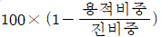
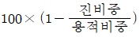
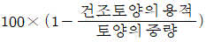
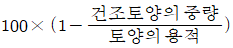
(정답률: 57%)
16. 주로 높은 수고의 수목으로 이루어진 숲은?
- 교림
- 왜림
- 중림
- 죽림
(정답률: 82%)
17. 종자의 결실량을 증가시키는 방법이 아닌 것은?
- 간벌작업을 실시한다.
- 화아분화기 전에 시비를 한다.
- 건조, 접목, 상처주기 등의 스트레스를 준다.
- 수피의 일부분을 제거하여 C/N율을 조절한다.
(정답률: 64%)
18. 다음 중 길항작용을 하는 토양양분이 아닌 것은?
- 철과 망간
- 질소와 인산·규산
- 칼륨과 칼슘·마그네슘
- 암모니아태질소와 칼륨
(정답률: 52%)
19. 수목의 가지치기 방법으로 옳지 않은 것은?
- 늦은 겨울이나 이른 봄에 실시하는 것이 좋다.
- 가지의 지피융기선을 다치지 않게 주의해야 한다.
- 죽은 가지도 잘라주어 유합조직의 형성을 도와준다.
- 절단면이 마르면 줄기 쪽으로 다시 한 번 잘라준다.
(정답률: 83%)
20. 파종하기 1개월 전 쯤에 노천매장을 함으로 발아가 촉진되는 수종은?
- Acer palmalum
- Picea jezoensis
- Zelkova serrata
- Juglans sinensis
(정답률: 52%)
2과목: 산림보호학
21. 수목병의 임업적 방제법에 대한 설명으로 옳지 않은 것은?
- 묘목은 건강하게 키워야 하며 취급에도 주의해야 한다.
- 특정한 병의 발생이 예상된 경우에는 다른 수종을 심는다.
- 부후병 방지를 위해서 봄에서 초여름에 걸쳐 벌채하는 것이 좋다.
- 조림지와 유사한 환경조건을 가진 임지의 우량한 모수에서 채취한 종자를 심는다.
(정답률: 76%)
22. 윤작은 어떤 병원균의 방제에 효과가 좋은가?
- 기주범위가 좁고, 기주가 없이도 오래 생존하는 것
- 기주범위가 넓고, 기주가 없이도 오래 생존하는 것
- 기주범위가 넓고, 기주가 없으면 오래 생존하지 못하는 것
- 기주범위가 좁고, 기주가 없으면 오래 생존하지 못하는 것
(정답률: 82%)
23. 온도 변화에 다른 수목 조직의 수축, 팽창 차이로 줄기가 갈라지는 현상은?
- 만상
- 상렬
- 상주
- 한상
(정답률: 83%)
24. 다음 중 천연기념물이 아닌 것은?
- 표범
- 산양
- 하늘다람쥐
- 점박이물범
(정답률: 69%)
25. 프로클로라즈 50% 유제 100cc를 0.⑤%로 희석할 때 소요되는 물의 양은?
- 약 10L
- 약 50L
- 약 100L
- 약 500L
(정답률: 58%)
26. 소나무재선충병에 대한 설명으로 옳지 않은 것은?
- 잣나무도 피해를 입을 수 있다.
- 현재는 솔수염하늘소에 의해서만 전반된다.
- 피해목은 벌채하여 메탐소듐 액제로 훈증한다.
- 우리나라는 1988년 경 부산에서 최초로 감염목이 발견되었다.
(정답률: 82%)
27. 매미나방에 대한 설명으로 옳지 않은 것은?
- 집시나방이라고도 한다.
- 유충은 군서생활을 한다.
- 수컷은 몸이 비대하여 잘 날지 못한다.
- 여러 가지 수종을 가해하는 잡식성이다.
(정답률: 77%)
28. 담배장님노린재에 의하여 전염되는 수목병은?
- 잣나무털녹병
- 소나무 잎마름병
- 오동나무 빗자루병
- 포플러 줄기마름병
(정답률: 83%)
29. 잣나무 털녹병균의 여름포자가 형성되는 기주식물은?
- 억새
- 송이풀
- 노루귀
- 주름잎조개풀
(정답률: 84%)
30. 성충과 유충이 잎을 가해하는 해충은?
- 땅강아지
- 밤바구미
- 솔잎혹파리
- 오리나무잎벌레
(정답률: 77%)
31. 파이토플라즈마에 의한 수목병이 아닌 것은?
- 뽕나무 오갈병
- 벚나무 빗자루병
- 대추나무 빗자루병
- 오동나무 빗자루병
(정답률: 79%)
32. 눈에 의해 발생되는 산림 피해에 대한 설명으로 옳지 않은 것은?
- 평지보다 경사지 계곡에서 피해가 크다.
- 피해 유형으로 관설해와 설암해 등이 있다.
- 습한 눈보다 건조한 눈에 의한 피해가 더 크다.
- 심근성 수종보다 천근성 수종의 피해가 더 크다.
(정답률: 81%)
33. 다음 중 병징이 아닌 것은?
- 총생
- 비대
- 분비
- 흰가루
(정답률: 75%)
34. 솔잎혹파리가 월동하는 충태와 장소로 옳은 것은?
- 알 - 기지
- 성충 - 수피
- 유충 - 땅 속
- 번데기 - 낙엽
(정답률: 78%)
35. 다음 중 종자 소독용 약제는?
- 결정석회황 합제
- 이프로벤포스 유제
- 가스가마이신 액제
- 베노람·티람 수화제
(정답률: 66%)
36. 해충의 몸 표면에 직접 또는 간접적으로 닿아 체내에 들어가 독작용을 일으키는 것으로 에프제나 DDVP에 속하는 살충제는?
- 접촉제
- 유인제
- 훈증제
- 소화 중독제
(정답률: 80%)
37. 1년에 2회 이상 발생하며 수피 사이나 지피물 밑에 꼬치를 짓고 번데기로 월동하는 것은?
- 매미나방
- 미국흰불나방
- 솔알락명나방
- 어스렝이나방
(정답률: 83%)
38. 다음 중 미국흰불나방이 주로 가해하지 않는 수종은?
- 소나무
- 벚나무
- 버즘나무
- 단풍나무
(정답률: 73%)
39. 바이러스에 대한 설명으로 옳지 않은 것은?
- 광학 현미경으로 볼 수 있다.
- 살아 있는 세포 내에서만 증식된다.
- 인공 재비에서는 배양이 되지 않는다.
- 주로 즙액, 곤충, 씨앗 등에 의해서 전입된다.
(정답률: 67%)
40. 병원체 중 가장 많은 수목병을 발생시키는 것은?
- 진균
- 세균
- 바이러스
- 마이코플라스마
(정답률: 67%)
3과목: 임업경영학
41. 작업급의 면적을 100ha, 윤벌기를 25년으로 할 때 법정영계면적은?
- 0.4ha
- 4ha
- 250ha
- 2,500ha
(정답률: 74%)
42. 다음 조건에서 Heyer 식을 이용하여 계산한 표준벌채량(m3)은?
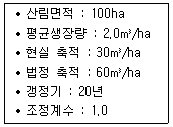
- 45
- 50
- 145
- 175
(정답률: 47%)
43. 감가상각비 계산방법에 해당하지 않는 것은?
- 정액법
- 정률법
- 연수합계법
- 작업시간급수법
(정답률: 61%)
44. 산림조사 항목으로 임지에서 임도나 도로까지의 거리를 나타내는 것은?
- 지세
- 지위
- 지력
- 지리
(정답률: 70%)
45. 1995년 재적이 150m3/ha, 2015년 재적이 300m3/ha 일 때 Pressler식에 의한 성장률은?
- 약 3.3%
- 약 3.7%
- 약 4.3%
- 약 5.0%
(정답률: 50%)
46. 임업경영의 지도원칙 중 보속성 원칙으로 옳은 것은?
- 국민의 복리 증진을 목표로 하는 원칙
- 최소의 비용으로 최대의 효과를 발휘하게 하는 원칙
- 해마다의 목재수확을 양적 및 질적으로 계속적으로 균등하게 하는 원칙
- 생산량을 투입한 생산요소의 수량으로 나눈값이 최고가 되도록 하는 원칙
(정답률: 82%)
47. 임지와 임목의 가치 평가 방법에 대한 설명으로 옳지 않는 것은?
- 유령림 임목은 비용가를 주로 사용한다.
- 장령림 임목은 시장가역산법을 적용한다.
- 매년 일정하게 영구적으로 얻는 연수익을 이률로 나눈 것은 자본가이다.
- 평가 대상 임목과 비슷한 매매사례가격으로 평가하는 것을 매매가라고 한다.
(정답률: 60%)
48. 다음 중 지종구분 항목이 아닌 것은?
- 제지
- 입목지
- 계획지
- 미립목지
(정답률: 62%)
49. 벌채목 재적 측정에 사용되는 것으로 벌채목의 중앙단면적과 재장을 곱하여 재적을 산출하는 방법은?
- Huber 식
- Reineke 식
- Smalian 식
- Brereton 식
(정답률: 77%)
50. 국유림의 경영 및 관리에 관한 법률에 의하여 산림청장이 국유림 경영관리 권한을 위임한 자로 옳지 않은 것은?
- 산림조합장
- 국립수목원장
- 산림항공본부장
- 제주특별자치도지사
(정답률: 57%)
51. 다음 중 수고를 측정할 수 있는 기구는?
- 윤척
- 섹타포크
- 덴드로미터
- 빌티모아스틱
(정답률: 64%)
52. 법정상태의 요건에 해당하지 않는 것은?
- 법정생장량
- 법정영급분배
- 법정임목확보
- 법정임분배치
(정답률: 66%)
53. 새로운 목재가공기술의 개발 등으로 인한 목재의 가격 상승을 의미하는 것은?
- 재적생장
- 가격생장
- 형질생장
- 등귀생장
(정답률: 72%)
54. 산림경영 관리회계에서 주로 다루는 내용이 아닌 것은?
- 원가계산
- 원가통제
- 업적평가
- 재무제표
(정답률: 46%)
55. 다음 중 소반으로 구획하는 요인이 아닌 것은?
- 지종이 상이할 때
- 면적이 상이할 때
- 지위가 상이할 때
- 작업종이 상이할 때
(정답률: 54%)
56. 앞으로 20년 후에 200만원의 수입이 예상되는 산림의 현재 가치는? (단, 연이율은 5%)
- 약 753,800원
- 약 791,500원
- 약 3,306,600원
- 약 5,306,600원
(정답률: 42%)
57. 일반적으로 사용되고 있는 원가비교 방법이 아닌 것은?
- 기간비교
- 한계비교
- 상호비교
- 표준실제비교
(정답률: 49%)
58. 임지기망가의 크기에 대한 설명으로 옳지 않은 것은?
- 이율이 높을수록 임지기망가는 커진다.
- 주벌수익이 클수록 임지기망가가 커진다.
- 조림비가 클수록 임지기망가는 작아진다.
- 동일한 작업법을 영구히 계속함을 전제로 한다.
(정답률: 72%)
59. 임분의 재적 측정법이 아닌 것은?
- 전림법
- 목측법
- 형수법
- 표본조사법
(정답률: 45%)
60. 임황조사 항목으로 임령의 표기방법으로 옳은 것은?
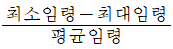
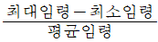
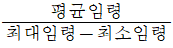
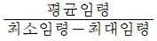
(정답률: 50%)
4과목: 산림공학
61. 마캐덤 롤러 장비에서 롤러는 몇 개로 구성되어 있는가?
- 1개
- 2개
- 3개
- 4개
(정답률: 70%)
62. 기슭막이에 대한 설명으로 옳지 않은 것은?
- 계안의 횡침식방지를 목적으로 한다.
- 산복공작물의 기초 보호를 위해 설치한다.
- 붕괴 위험성이 큰 지점의 전방에 시공한다.
- 계획홍수위보다 0.5 ~ 0.7m 낮게 설치한다.
(정답률: 63%)
63. 황폐계천 하상세굴 방지 및 계상 기울기 안정 등 계류의 종횡단 형상을 유지하기 위해 계류를 횡단하여 축설하는 공작물은?
- 사방댐
- 골막이
- 기슭막이
- 바닥막이
(정답률: 46%)
64. 임도 시설기준에서 포장한 노면의 경우에 횡단기울기는?
- 1.5 ~ 2%
- 3 ~ 5%
- 7% 이하
- 8% 이하
(정답률: 47%)
65. 임도의 배수시설에 대한 설명으로 옳은 것은?
- 겉도랑은 노면 위의 물을 임도를 횡단시켜 배수한다.
- 옆도랑은 노면 위의 물을 바로 비탈면에 배수한다.
- 빗물받이는 임도 길어깨에 따라 종단방향으로 설치한다.
- 속도랑은 노면 위의 물을 길어깨에 따라 종단방향으로 설치한다.
(정답률: 43%)
66. 벌도 작업 시 유의할 사항으로 옳지 않은 것은?
- 산정방향으로 나무가 넘어지려는 순간에 작업자들은 등고선에 따라 옆으로 대피해야 한다.
- 급경사지에서 산록방향으로 벌도할 경우에는 수구의 천정이 아래쪽을 향하도록 만들어 준다.
- 경사가 이상인 지역과 표토가 얼어 있는 지역에서는 산록방향으로 벌도하는 것이 유리하다.
- 활엽수인 경우에는 산록방향으로 벌도하는 것이 비합리적이고 위험하므로 산정방향으로 벌도하는 것이 유리하다.
(정답률: 53%)
67. 와이어로프의 안전계수를 바르게 나타낸 식은?
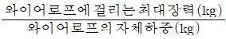
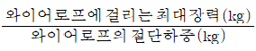
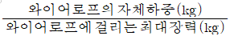
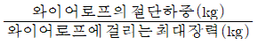
(정답률: 56%)
68. 보통의 임목을 벌목하려 할 때 수구 각도로 가장 적합한 것은?
- 상관 없다.
- 15°
- 45°
- 60°
(정답률: 72%)
69. 사방댐의 위치선정 원칙에 해당되지 않는 것은?
- 계상 및 양안에 암반이 있는 곳
- 상류부가 좁고 댐의 자리가 넓은 곳
- 지류가 합류하는 지점에 계획할 때는 합류점 하류부
- 계단상으로 할 때에는 추정퇴사선과 구계상이 만나는 지점
(정답률: 74%)
70. 골막이에 대한 설명으로 옳지 않은 것은?
- 계상물매를 완화하여 종침식을 방지한다.
- 구조적으로 사방댐과 달리 대체로 대수측만 축설한다.
- 산각을 고정하고 양안의 산복붕괘를 방지한다.
- 방수로를 변도로 설치하지 않는 대신 중앙부를 낮게 한다.
(정답률: 47%)
71. 비탈면의 수직 높이가 2.5m이고 수평거리가 5m일 때의 비탈면 기울기는?
- 1: 2
- 1 : 2.5
- 2 : 1
- 2.5 : 1
(정답률: 68%)
72. 해안사방에서 조기에 수림화를 유도하기 위해 밀식하는 경우 1ha당 가장 적당한 본수는 얼마인가?
- 상층 2000본, 하층 5000본
- 상층 2000본, 하층 6000본
- 상층 2500본, 하층 3000본
- 상층 2500본, 하층 4000본
(정답률: 65%)
73. 임도 비탈면에 돌쌓기를 한 경우 지름 3cm 정도의 물빼기 구멍을 설치한다. 다음 중 가장 적합한 것은?
- 3 ~ 4m2에 1개 설치
- 2 ~ 3m2에 1개 설치
- 1.5 ~ 2m2에 1개 설치
- 1m2에 1개 설치
(정답률: 64%)
74. 벌목과 운재계획을 위한 예비조사에 해당하지 않는 것은?
- 벌목구역조사
- 반출방법조사
- 임황 및 지황조사
- 기존 실행결과조사
(정답률: 61%)
75. 다음 중 치수를 특별한 규격에 맞도록 가공한 석재는?
- 호박돌
- 야면석
- 막깬돌
- 견치돌
(정답률: 82%)
76. 산비탈면 비탈다듬기공사에 대한 설명으로 옳지 않은 것은?
- 수정기울기는 대체로 최대 전후로 한다.
- 공사는 산 아래부터 시작하여 산꼭대기로 진행한다.
- 붕괴면 주변의 상부는 충분히 끊어내도록 설계한다.
- 퇴적층의 두께가 3m 이상일 때에는 땅속 흙막이 공작물을 설계한다.
(정답률: 74%)
77. 흙쌓기는 시공 후 시일이 경과하면 수축하여 용적이 감소하므로 더쌓기를 실시한다. 이 때 일반적인 더쌓기는 흙쌓기 높이의 몇 % 정도 실시하는가?
- 0 ~ 5
- 5 ~ 10
- 10 ~ 15
- 15 ~ 20
(정답률: 64%)
78. 아래 나열된 장비의 용도로 옳은 것은?
- 양묘용
- 조림용
- 육림용
- 산림보호용
(정답률: 76%)
79. 토사의 안식각에 대한 설명으로 옳지 않은 것은?
- 토사의 크기에 따라 다르다.
- 토사의 함수상태에 따라 다르다.
- 포화되면 젖은 흙의 안식각 크기와 같아진다.
- 일반적으로 같은 조건에서는 마른 자갈보다 마른 모래가 안식각이 작다.
(정답률: 60%)
80. 임도 시설규정에서 길어깨과 옆도랑의 너비를 제외한 임도의 간선임도 유효너비 기준은?
- 2.0m
- 2.5m
- 3.0m
- 6.0m
(정답률: 75%)